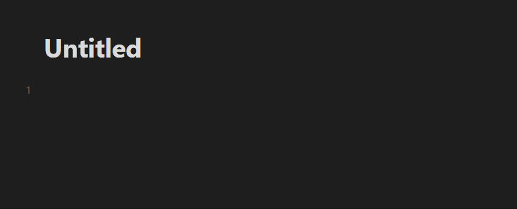

from os import PathLike
from fastcore.test import *
from nbdev.showdoc import show_docmarkdown.obsidian.links
Functions for parsing internal links in Obsidian.md style markdown.
Obsidian uses both Markdown style links and Wikilinks as internal links. Markdown style links are of the form [text_shown](link) whereas Wikilinks are of the form [[link_to_markdown#possible_anchor_to_header|text_shown]]. They have an exclamation mark ! if they are embedded.
Within Obsidian, it is often more convenient to use Wikilinks for Vault-internal links for several reasons:
- Obsidian automatically searches for links and aliases matching for auto-completion when constructing a Wikilink.

- Wikilink allow for the empty space character
(whereas Markdown style links require empty space charactersto be replaced with%20)
Nevertheless, Markdown style links have the following functions which Wikilinks lack:
- Markdown style links can contain external links (whether the links point to other Obsidian vaults or to a URL)
- Markdown style links can render LaTeX text.
Finding links in text via indices
find_links_in_markdown_text
find_links_in_markdown_text (text:str)
Return ranges in the markdown text string where internal links occur.
See Also
| Type | Details | |
|---|---|---|
| text | str | |
| Returns | list[tuple] | Each tuple is of the form (a,b) where text[a:b] is an obsidian internal link. |
find_links_in_markdown_text returns a list of indices in a string in which the links are located.
# TODO: add markdown links to exampletutorial_text = r'''
This is an Obsidian note. It has some [[this_is_the_note_to_which_the_link_points|links]]!
Links are pretty neat. They can [[this_text_is_not_actually_shown|connect notes]] for you.
The following will create a link to the note `some_note`; the displayed text is `some_note`: [[some_note]]
You can also embed the contents of one note into another note. ![[note_being_embedded]].
The contents of `note_being_embedded` will be displayed when you view the note in Obsidian's view mode.
You can make anchors in links. For example [[note#This is a header title]] is a link to the note named
`note` and more specifically to the theader with title `This is a header title`.
The above links are all Wikilinks. Obsidian also supports Markdownlinks, e.g. [This is the text shown](This is the link.)
If the note of a link does not exist in an Obsidian vault, then Obsidian will create the note.
Even if the note does not have a header with title specified by the anchor of a link, Obsidian
will still open the note; it will not go to any particular header, however.
'''
ranges = find_links_in_markdown_text(tutorial_text)
match_strs = [tutorial_text[start:end] for start, end in ranges]
test_eq(match_strs, [
'[[this_is_the_note_to_which_the_link_points|links]]',
'[[this_text_is_not_actually_shown|connect notes]]',
'[[some_note]]',
'![[note_being_embedded]]',
'[[note#This is a header title]]',
'[This is the text shown](This is the link.)'])ObsidianLink class
LinkFormatError
LinkFormatError (text)
Error that is raised when a string cannot be parsed as an ObsidianLink object.
Attribute
text-str
LinkType
LinkType (value, names=None, module=None, qualname=None, type=None, start=1)
An Enumeration indicating whether an ObsidianLink object is a Wikilink or a Markdown-style link.
Enumerates LinkType.WIKILINK and LinkType.MARKDOWN.
ObsidianLink
ObsidianLink (is_embedded:bool, file_name:Union[str,int], anchor:Union[str,int], custom_text:Union[str,int], link_type:LinkType=<LinkType.WIKILINK: 0>)
Object representing an obsidian link
Attributes
is_embedded-bool- Whether or not the link is embedded.
file_name-str, or-1The destination of the link. It is either
- The Obsidian-vault-recognized name of the file that the link points to. It can be a path relative to the Obsidian vault path without the file extension (.md),
- an external link, such as a URL, or
- -1, in which case the object represents a generic link pointing to any file (this is for generating regex).
Note that if
file_nameis the empty string, then the link is a link to the same file
anchor-str,0, or-1- The title of the header of the anchor in the destination that the link points to or the ID to the markdown block link (preceded by a carat
^). If 0, then theObsidianLinkobject represents a link without an anchor. If -1, then the object represents a generic link with or without an anchor (this is for generating regex).
- The title of the header of the anchor in the destination that the link points to or the ID to the markdown block link (preceded by a carat
custom_text-str,0, or-1- The custom text of the link. Is
Noneif no such text is specified. If 0, then theObsidianLinkobject represents an internal link without custom text. If -1, then the object represents a generic internal link of any custom text (this is for generating regex).
- The custom text of the link. Is
link_type-LinkType- If
LinkType.WIKILINK, then the str should be of the format'[[<Obsidian-vault-recognized-name>(#anchor)?(|custom_text)]]'(The question marks here indicate optional components). Otherwise, the str should be a more standard Markdown link. Defaults toLinkType.WIKILINK.
- If
Parameters
- is_embedded - bool
- file_name - str or
None- If
None, setself.file_nameto-1.
- If
- anchor - str or
None - custom_text - str or
None - link_type -
LinkType
ObsidianLink.from_text
ObsidianLink.from_text (text:str)
Return an ObsidianLink object from text.
Raises
- InteralLinkFormatError
- If
textis not properly formatted as an Obsidian internal link.
- If
ObsidianLink.to_regex
ObsidianLink.to_regex ()
Return the regex for that this ObsidianLink object represents.
Assumes that self.file_name, self.anchor, and self.custom_text are regex-formatted strings, e.g. if self.custom_text is denotes?, then the outputted regex-pattern matches links whose custom text is either denote or denotes.
If neither self.file_name, self.anchor nor self.custom_text is -1, then the regex will in fact be a concrete string.
ObsidianLink.__str__
ObsidianLink.__str__ ()
Return str(self).
ObsidianLink.to_string
ObsidianLink.to_string ()
Return the string for the link if it is concrete.
Raises
- ValueError
- If
self.file_name,self.anchororself.custom_textis -1, i.e. ambiguously represents an anchor or custom text.
- If
ObsidianLink.convert_link_type
ObsidianLink.convert_link_type (link_type:__main__.LinkType)
Return an equivalent Link object which has the specified LinkType.
ObsidianLink.displayed_text
ObsidianLink.displayed_text ()
Returns the displayed text of this link.
self.file_name, self.custom_text and self.anchor are assumed to be not -1.
ObsidianLink.is_abstract
ObsidianLink.is_abstract ()
Return True if self is abstract, i.e. file_name, anchor, or custom_text is -1.
Parsing an ObsidianLink class from a string
The following example parses a Wikilink with an anchor and a custom display text:
internal_link = ObsidianLink.from_text("[[smooth_covering_map#Smooth covering map 1|smooth covering map]]")
assert internal_link.file_name == "smooth_covering_map"
assert internal_link.anchor == "Smooth covering map 1"
assert internal_link.custom_text == "smooth covering map"The following example parses a Wikilink with an anchor, but not with a custom display text:
internal_link = ObsidianLink.from_text("[[sample_thing#anchor]]")
assert internal_link.file_name == "sample_thing"
assert internal_link.anchor == "anchor"
assert internal_link.custom_text == 0The following example parses a Wikilink without an anchor, but with custom display text:
internal_link = ObsidianLink.from_text("[[another_file|this_is_the_text_shown]]")
assert internal_link.file_name == "another_file"
assert internal_link.anchor == 0
assert internal_link.custom_text == "this_is_the_text_shown"The following example parses a Wikilink without neither an anchor nor custom display text:
internal_link = ObsidianLink.from_text("[[notation_I_S_ideal_of_vanishing_on_a_subset_of_the_spectrum_of_a_ring]]")
assert internal_link.file_name == "notation_I_S_ideal_of_vanishing_on_a_subset_of_the_spectrum_of_a_ring"
assert internal_link.anchor == 0
assert internal_link.custom_text == 0The following example parses an embedded (Wiki)link
internal_link = ObsidianLink.from_text("![[_reference_some_reference]]")
assert internal_link.file_name == "_reference_some_reference"
assert internal_link.anchor == 0
assert internal_link.custom_text == 0The following example parses a Markdownlink with an anchor:
internal_link = ObsidianLink.from_text("[asdf](localization_of_a_module#Localization of a module 1)")
assert internal_link.file_name == "localization_of_a_module"
assert internal_link.anchor == "Localization of a module 1"
assert internal_link.custom_text == "asdf"The following example parses a Markdownlink with some spaces formatted as %20:
internal_link = ObsidianLink.from_text(r"[do do](Some%20note#Topic%201)")
assert internal_link.file_name == "Some note"
assert internal_link.anchor == "Topic 1"
assert internal_link.custom_text == "do do"The following example parses a Markdownlink in which the displaytext has LaTeX in it:
internal_link = ObsidianLink.from_text("[$\\mathscr{O}(n)$](some_reference_notation_O_n_on_projective_scheme)")
assert internal_link.file_name == "some_reference_notation_O_n_on_projective_scheme"
assert internal_link.anchor == 0
assert internal_link.custom_text == "$\\mathscr{O}(n)$"
# TODO test links with file_name = -1Constructing abstract ObsidianLink objets
We might want to detect links in Obsidian Markdown notes of certain formats. Constructing ObsidianLink objects via the constructor can help with this.
Setting file_name, anchor, or custom_text to -1 can yields an ObisidianLink object representing an abstract link. Use the to_regex function of the ObsidianLink object to get a regex str which detects links of the specified format.
In the following example, the anchor and custom text of the ObsidianLink object are both abstract - the regex pattern returned by ._to_regex will detect any link of the specified type (by default, LinkType.WIKILINK) with the specified file name:
internal_link_object = ObsidianLink(is_embedded=False, file_name = 'hi', anchor=-1, custom_text=-1)
regex_pattern = internal_link_object.to_regex()
print(f'regex_pattern: {regex_pattern}')
assert re.match(regex_pattern, '[[hi#this is some anchor|this is some display text]]')
assert re.match(regex_pattern, '[[hi|some display text, but no anchor!]]')
assert re.match(regex_pattern, '[[hi#some anchor, but no custom text]]')
assert re.match(regex_pattern, '[[hi]]') #No anchor and no custom text
assert not re.match(regex_pattern, '[[note_with_wrong_name]]')regex_pattern: \[\[hi(#(.*?))?(\|(.*?))?\]\]The following is an example where the custom_text is specified, but the file_name and anchor are both abstract:
internal_link_object = ObsidianLink(is_embedded=False, file_name = -1, anchor=-1, custom_text='must match this text!')
regex_pattern = internal_link_object.to_regex()
print(f'regex_pattern: {regex_pattern}')
assert re.match(regex_pattern, '[[some note#some anchor|must match this text!]]')
# TODO: matching the below is not currently implemented.
# assert re.match(regex_pattern, '[[must match this text!]]')
assert re.match(regex_pattern, '[[some note|must match this text!]]')
assert re.match(regex_pattern, '[[#anchor in note|must match this text!]]') #No anchor and no custom text
assert not re.match(regex_pattern, '[[some note#some anchor|Wrong text]]')regex_pattern: \[\[([^#\|]*)?(#(.*?))?\|must match this text!\]\]In the following example, the linktype is specified to be LinkeType.MARKDOWN:
internal_link_object = ObsidianLink(is_embedded=False, file_name = 'hi', anchor=-1, custom_text=-1, link_type=LinkType.MARKDOWN)
regex_pattern = internal_link_object.to_regex()
print(f'regex_pattern: {regex_pattern}')
assert re.match(regex_pattern, '[Some custom text](hi#Some anchor)')
assert re.match(regex_pattern, '[Some custom text, no anchor](hi)')
assert not re.match(regex_pattern, '[Some custom text, link an anchor in the same note](#anchor)')regex_pattern: \[(.*?)?\]\(hi(#(.*?))?\)String of an ObsidianLink object
A concrete ObsidianLink object has a to_string function:
internal_link_object = ObsidianLink(is_embedded=True, file_name = 'compactly_generated_product_hom_adjunction', anchor='Title', custom_text='compactly generated', link_type=LinkType.WIKILINK)
print(internal_link_object.to_string())
internal_link_object = ObsidianLink(is_embedded=True, file_name = 'compactly_generated_product_hom_adjunction', anchor='Title 1', custom_text='compactly generated', link_type=LinkType.MARKDOWN)
print(internal_link_object.to_string())![[compactly_generated_product_hom_adjunction#Title|compactly generated]]
Find the links in text as ObsidianLink objects
links_from_text
links_from_text (text:str)
Return a list of ObsidianLink objects corresponding to links found in the text.
| Type | Details | |
|---|---|---|
| text | str | |
| Returns | listObsidianLink | The ObsidianLink objects are ordered by appearance. |
Unlike find_links_in_markdown_text, the links_from_text function returns a list of ObsidianLink objects instead.
links = links_from_text(tutorial_text)
assert links[0].displayed_text() == 'links' # The displayed text of [[this_is_the_note_to_which_the_link_points|links]] is `links`.
assert links[3].is_embedded # ![[note_being_embedded]] is an embedded link
assert links[4].anchor == 'This is a header title' # [[note#This is a header title]] has anchor `This is a header title`.Removing links from text
remove_links_from_text
remove_links_from_text (text:str, exclude:list[__main__.ObsidianLink]=None, remove_embedded_note_links:bool=False)
Return a text with all Obsidian links removed and replaced with the display texts of the links.
| Type | Default | Details | |
|---|---|---|---|
| text | str | ||
| exclude | listObsidianLink | None | A list of ObsidianLink objects of links to not be removed. |
| remove_embedded_note_links | bool | False | If True, remove links to embedded notes as well. Note that embedded links are replaced by their “display” text in the same manner as non-embedded links and are not replaced the content of the embedding. If False, does not modify embedded note links. |
| Returns | str |
We can remove all links of from text and preserve the underlying display text of each link:
text = 'I have a [[this is a note#this is an anchor in the note|link]]'
links_removed = remove_links_from_text(text)
print(links_removed)
assert links_removed == 'I have a link'
text = 'Something about a [[some_reference_conormal_sheaf_of_a_locally_closed_embedding#For a locally closed embedding 2 4|conormal sheaf]]'
links_removed = remove_links_from_text(text)
print(links_removed)
assert links_removed == 'Something about a conormal sheaf'
text = 'This is a link without a specified display text: [[some_kind_of_note]].'
links_removed = remove_links_from_text(text)
print(links_removed)
assert links_removed == 'This is a link without a specified display text: some_kind_of_note.'
text = 'This is a link to an anchor without a specified display text: [[another_note#another anchor]].'
links_removed = remove_links_from_text(text)
print(links_removed)
assert links_removed == 'This is a link to an anchor without a specified display text: another_note > another anchor.'I have a link
Something about a conormal sheaf
This is a link without a specified display text: some_kind_of_note.
This is a link to an anchor without a specified display text: another_note > another anchor.We can specify links to not remove in this process:
text = 'This thing [[some note|denotes]] something'
do_not_remove_link = ObsidianLink(False, None, -1, 'denote(s)?')
links_removed = remove_links_from_text(text, exclude=[do_not_remove_link])
assert text == links_removedThis function does not remove embedded links by default.
text = '![[embedded note]]'
links_removed = remove_links_from_text(text)
print(links_removed)
assert links_removed == text![[embedded note]]text = '![[embedded note]]'
links_removed = remove_links_from_text(text, remove_embedded_note_links=True)
print(links_removed)
assert links_removed == 'embedded note'embedded noteQueries about links in a vault
all_custom_text_for_links_in_vault
all_custom_text_for_links_in_vault (note:trouver.markdown.obsidian.vault .VaultNote, vault:os.PathLike, anchor:Union[str,int]=-1)
Return all custom text used in the Obsidian vault for the specified note and anchor.
| Type | Default | Details | |
|---|---|---|---|
| note | VaultNote | The note to find the custom text for. | |
| vault | PathLike | The path to the Obsidian vault directory | |
| anchor | Union[str, int] | -1 | The anchor in the note to find the custom text for. If 0, then returns only the custom texts for internal links without anchors. If -1, then returns the custom texts for all of the internal links of the specified note. |
| Returns | dict[Union[str, int], str] | Each key is the custom text used and each value is a set of paths relative to vault to the notes where the custom text is used. The key 0 means that no custom text is used. |
# TODO: examplesall_links_in_vault
all_links_in_vault (vault:os.PathLike, backlinks:bool=False, multiplicities:bool=False)
Returns a dict keeping track of which notes contain links to which notes.
TODO: currently, the regex capture regex code. Change them so that this does not happen.
Parameters - vault - PathLike - backlinks - bool - If True, then keeps track of the links in each note. If False, then keeps track of the backlinks in each note, i.e. which other notes link to each note. Defaults to False. - multiplicties - bool - If True, then keeps track of multiple links to the same note for each note. Otherwise, only keeps track of whether or not a note links to a(nother) note. Defaults to False.
Returns - dict[str, list[str]] - Each key is a str, referring to the name of a note. Each corresponding value is a list. The list contains the names of all the notes which the key note references to if backlinks is True, and contains the names of all the notes which reference the key note if backlinks is False. The list can contain multiple occurrences of the same note if multiplicities is True.
# TODO: examples